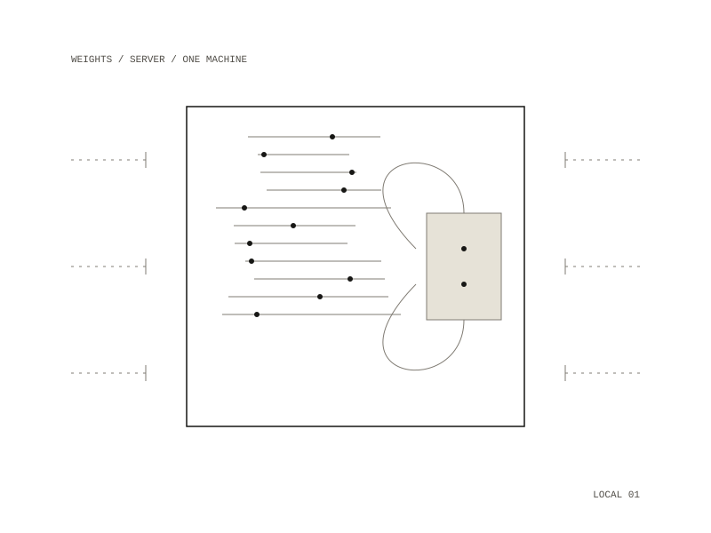

Local models
A model server and fine-tuning that run on your own machine
A model server and a fine-tuning setup for running an open-weight model entirely on one machine. The server listens only on the machine itself, reads the weights from a local copy and never touches the network.

The model server
One script starts the server and leaves it running; anything that speaks the common chat interface can use it, so the agent and the server can be swapped independently. A second script runs the same model under a different server, and fixes the two settings that otherwise break it silently: the size of the context window and the template that lets the model call tools. The two servers were measured against each other on the same tasks and came out the same.
The weights are fetched once with a resumable download, so a dropped connection doesn't restart an 18 GB transfer.
Fine-tuning
A small adapter can be trained on your own commits, so the model picks up your style rather than being told about it. The data comes from your own repositories, leaving out merges, reverts, work-in-progress commits and generated files. Training is conservative by default and is stopped when the validation loss stops falling.
The adapter is judged against the base model on real tasks, watching tool calling most closely. If it gets worse, deleting the adapter puts everything back as it was. For most people it is not worth it: memory and conventions learned from git history capture what matters, in a form you can read and correct.
- Year
- 2026
- Medium
- software / local AI
- Runs on
- One laptop with 48 GB of memory, with no network
- Model
- An open-weight model of about 18 GB
- Used by
- Daimon
- Repository: private